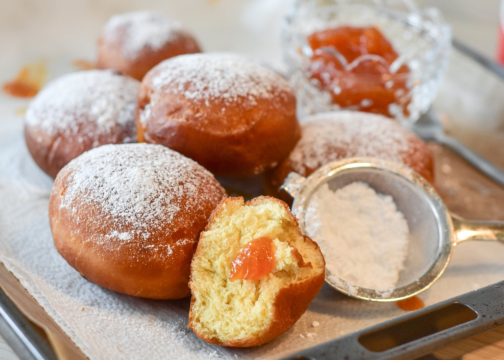

Apple Cider Donuts

Image credits:RitaE
Description:
Apple cider donuts are delightful and flavorful treats that capture the essence of autumn. These classic donuts are made using fresh apple cider, imparting a rich, apple-infused taste to the dough. The resulting donuts are typically moist, slightly spiced with cinnamon and nutmeg, and feature a sugary coating, often a mix of cinnamon and sugar.
The combination of the sweet, apple-flavored dough and the aromatic coating creates a comforting and seasonal treat. Apple cider donuts are commonly enjoyed during the fall months, making them a beloved part of autumn traditions. Whether picked up from a local orchard or made at home, these delicious donuts are a perfect way to savor the flavors of the season.
Ingredients:
- 2 cups all-purpose flour
- 1/2 cup granulated sugar
- 1 teaspoon baking powder
- 1/2 teaspoon baking soda
- 1/2 teaspoon ground cinnamon
- 1/4 teaspoon ground nutmeg
- 1/2 teaspoon salt
- 1/2 cup unsalted butter, melted
- 1/2 cup apple cider
- 1 large egg
- 1 teaspoon vanilla extract
- Oil for frying
- 1/2 cup granulated sugar
- 1 teaspoon ground cinnamon
Steps:
- Prepare Dry Ingredients: Combine flour, sugar, baking powder, baking soda, cinnamon, nutmeg, and salt in a bowl. Mix well.
- Combine Wet Ingredients: In a separate bowl, whisk together melted butter, apple cider, egg, and vanilla extract.
- Combine Dry and Wet Ingredients: Gradually add the wet ingredients to the dry ingredients, stirring until just combined. Do not overmix.
- Form the Dough: Turn the dough out onto a floured surface. Pat it into a 1/2-inch thick rectangle.
- Cut Donuts: Use a donut cutter or two round cutters (one larger for the outer shape, and one smaller for the hole) to cut out donuts.
- Heat Oil: In a deep fryer or heavy-bottomed pan, heat oil to 350°F (180°C).
- Fry Donuts: Carefully add the donuts to the hot oil, frying for about 1-2 minutes per side or until golden brown.
- Drain Excess Oil: Place the fried donuts on a paper towel to drain any excess oil.
- Coat with Cinnamon Sugar: In a shallow bowl, mix granulated sugar and cinnamon for coating. Roll each donut in the mixture until well coated.
- Serve and Enjoy: Arrange the apple cider donuts on a serving plate and savor the warm, spiced goodness. Perfect for enjoying with a cup of hot apple cider or your favorite fall beverage.